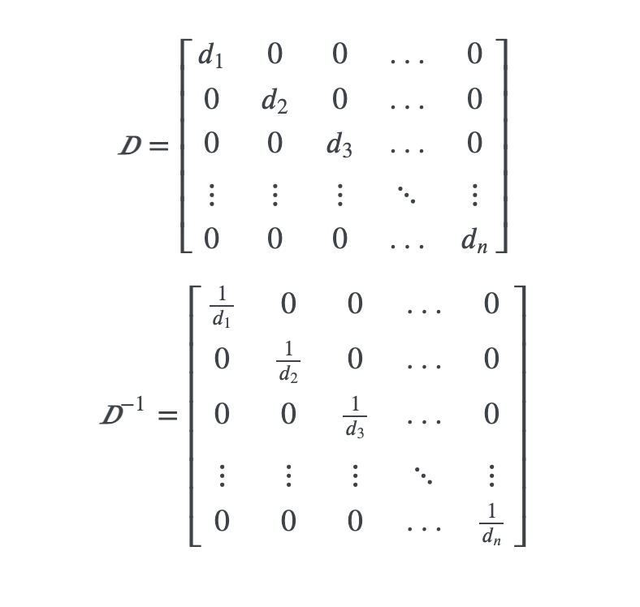
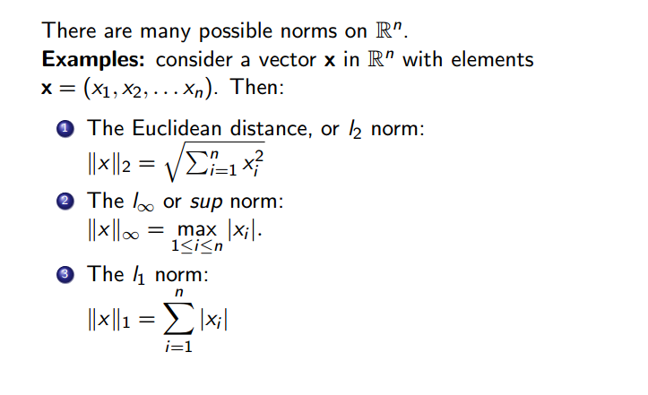

Following are some matrices and vectors which are useful for understanding deep learning concepts
- Diagonal Matrix
Matrices, in which all elements are zero except in the main diagonal line
ie:
The identity matrix is a diagonal matrix where all the elements are 1
means a diagonal matrix whose diagonal elements are denoted by a vector
The good characteristics of the diagonal matrices are their computational efficiency on multiple actions
eg) diag(v)x = v๏x also the inverse of diag(v) is also efficient

Inverse of Diagonal matrix
While deriving machine learning algorithms we can restrict matrices to diagonal and make the process less expensive as well as descriptive
There are rectangular diagonal matrices as well.Albeit they don’t have an inverse, matrix multiplication is cheaper as scaring the matrix by x time ( either making it more taller or wider by a factor of x) in Dx
- Symmetric Matrix
When a matrix is equal to its transpose it is known as symmetric.
Symmetric Matrix is created by functions with two arguments and was the order of arguments wont affect the final result ( also known as a symmetric function)
- Unit vector
Unit vector is a vector with unit norm
some back ground information about norms - norms are function we use to measure the size of the vector. The norms with Lp are functions mapping vectors into a non-negative values
L2 is known as Euclidean norm
- Orthogonal vector
If two vectors are orthogonal to each other then
If both the vectors have a non zero norm then it means there are perpendicular to each other. If two vectors are not only perpendicular to each other and has a unit norm then they known as orthonormal
An orthogonal matrix is a square matrix whose rows are mutually orthonormal and whose columns are mutually orthonormal
As the inverse of the orthogonal vectors are very cheap to compute they have very much demand ( side note : as we know inorder to solve the problems like finding weights of the features, we need to solve the equation. Where the most challenging part of that is finding the inverse of the matrix, whereas the features are orthogonal it is very easy)